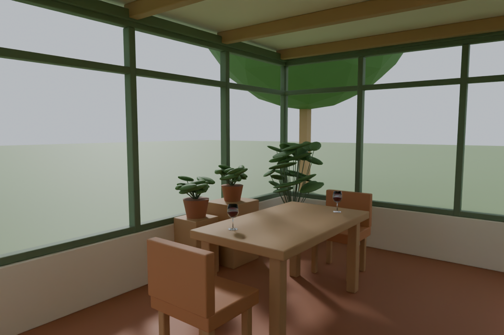

The fictional surveyTwo trees, one reading seat
The 5.4 × 3.6 m conservatory faces south. A field maple stands to the west and a smaller apple tree grows beyond the south glass. The household wants to keep both trees and the view.
We traced the sun from seated eye height through each modelled crown. On 21 June at 12:30 BST the ray clears both crowns. At 16:30 BST it meets the maple, with 18% direct light passing through the assumed summer foliage.
In December the bare apple branches intercept the 10:30 GMT ray. The assumed transmission rises to 72%. A west-facing reader can still catch low sun, so the west screen needs an independent control.
Open the survey measurements Plan · north up. The lines point from the reader towards the June sun. Crown outlines show the fictional surveyed extents.
The summer testWhat made the difference?
We ran each design against the same 8,760 hours of Gatwick weather. The target was 18–26 °C for at least 95% of occupied hours in each season, with the room in use from 08:00 to 18:00 every day.
| Design tested | Occupied hours above 26 °C | Occupied hours below 18 °C |
|---|
| Existing glass roof | 1,667 | 604 |
| Add external screens only | 1,478 | 611 |
| Improve ventilation only | 1,547 | 618 |
| Replace roof and upgrade glazing | 473 | 602 |
| Combine fabric, screens and vents | 0 | 663 |
| Add timed heating and cooling | 0 | 6 |
The external screens protect the upright glass. They leave the original glazed roof exposed. An insulated opaque roof and lower-solar-gain glazing made the biggest individual difference. Combining them with screens and cross-ventilation resolved the summer threshold in this weather year.
The winter returnWarm enough for breakfast?
The combined summer design still fell below 18 °C during 663 occupied hours. The fictional owner chose a thermostatic fan coil with a 04:00 heating start. That choice carries a running cost: the model delivers 3,042 kWh of heat over the year.
Six cold hours remain. The selected design meets the brief in all four seasons of the modelled year.
| Time within 18–26 °C | Original | Redesign |
|---|
| Winter | 49.2% | 99.3% |
| Spring | 38.8% | 100.0% |
| Summer | 11.5% | 100.0% |
| Autumn | 52.0% | 100.0% |
Back in the room

Native camera · oak joists under the insulated roof, high-level vent panels and retracted screens.AI concept · the same arrangement with finished materials and garden planting.The fan coil and the sliding entrance are behind this camera. Open the models to inspect them. The light in the photograph illustrates the room; the calculations use the survey and weather file.
Looking for the handover packs?
Alder Cottage is the separate fictional library example. Open its plan and furnished view, or download any of its nine standalone handovers.
Choose an Alder Cottage pack →